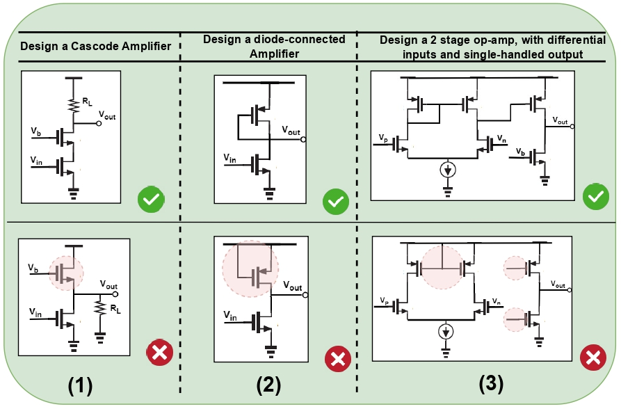
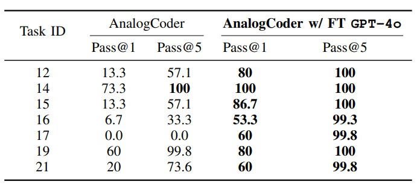

Results

Results on LLMs and Finetuned (`FT') variants on MASALA-CHAI dataset. `CL' is CodeLlama. `DS' is DeepSeek.

Pass/fail design cases generated by fine-tuned model.

Masala-CHAI is a fully automated framework leveraging large language models (LLMs) to generate Simulation Programs with Integrated Circuit Emphasis (SPICE) netlists. It addresses a long-standing challenge in automating netlist generation for analog circuits within circuit design automation. Automating this workflow could accelerate the creation of finetuned LLMs for analog circuit design and verification. We identify key challenges in this automation and evaluate multi-modal capabilities of state-of-the-art LLMs, particularly GPT-4, to address them. We propose a three-step workflow to overcome limitations: labeling analog circuits, prompt tuning, and netlist verification. This approach creates an end-to-end SPICE netlist generator from circuit schematic images, tackling the long-standing hurdle of accurate netlist generation. Our framework demonstrates performance improvements, tested on approximately 7500 schematics of varying complexity across 10 books. As a part of the study, we have finetuned different LLM models with the generated dataset and reported their capability to generate SPICE netlists. We open-source this solution for community-driven development.
BibTex Code Here